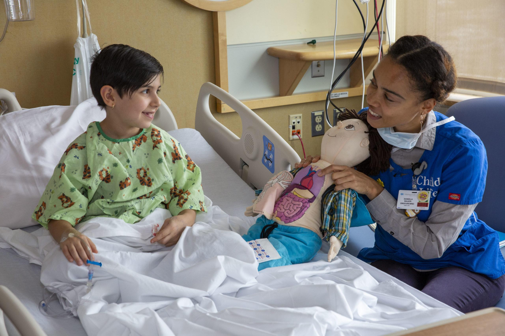
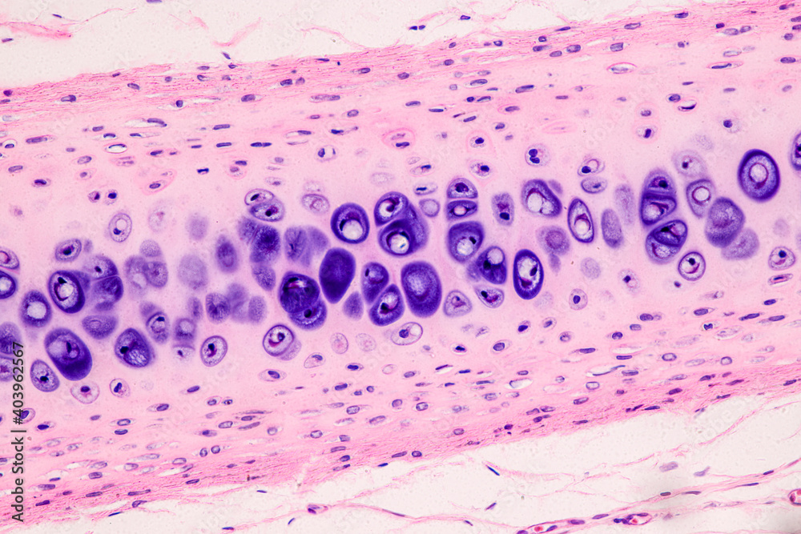

Algunas de nuestras obras
Dolor de la quimioterapia
Esta paciente fotografio su proceso de quimioterapia para mostar al mundo el doloroso proceso de este tratamiento, ¿que harias tu si te ocurriese esto?

Jugando en un hospital
Como mantener la alegria en un niño hospitalizado es una de las situaciones mas dolorsas para el equipo de salud
Cansancio en la pandemia COVID
La fotografia refleja el punto mas critico de la pandemia donde el equipo de salud se encontraba agobiado

Fotografia de un cartilago
Imagen microscopica de como se ve un cartilago bajo el microscopio, se utilizan colorantes biologicos para diferenciar los componentes de este tipo de tejido